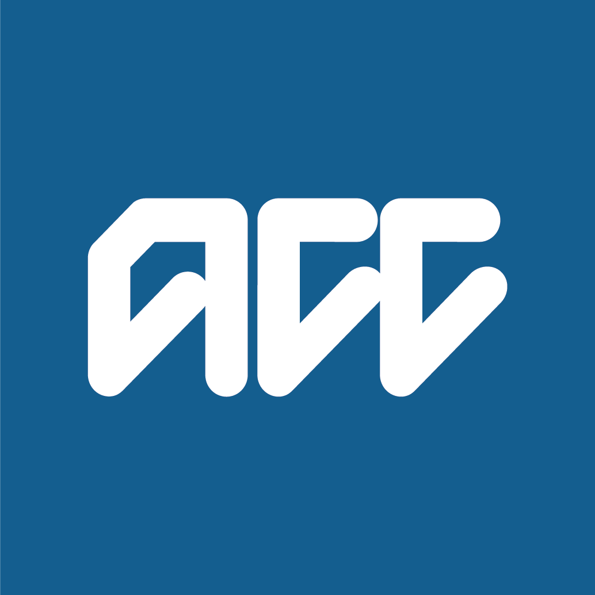
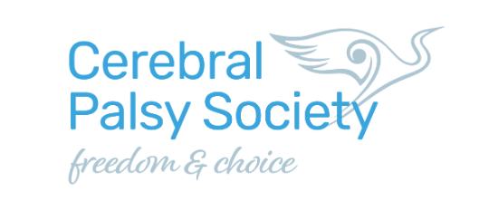

Every journey, made possible.
Caring, dependable transport for people with mobility needs—so getting where you need to go feels simpler, safer, and more personal.


Transport that meets you where you are.
Learn about our approach →
Go where life takes you.
Purposeful support for the everyday journeys and important moments that keep life moving.
Health & recovery
Medical appointments, rehabilitation and ACC funded transport.
School & university
Safe, supervised transport for learning and campus life.
Church visits
Reliable transport for faith, connection and community.
Errands & shopping
Malls, groceries, pharmacy visits, cafes and meals out.
Airport pick up & drop off
Comfortable, timely airport journeys with extra support.
Recreation & outdoors
Nature, social activities, recreation and sport.
Reliable support, from door to door.
Every journey is thoughtfully planned around the person travelling. Our drivers understand that comfort, patience and clear communication matter just as much as arriving on time.
- Prebooked journeys for added peace of mind
- Wheelchair accessible, comfortable vehicles
- Personal, dependable support from start to finish
- Flexible options for individuals and groups
Let’s make your next journey an easy one.
Tell us where you need to go and when. We’ll take care of the rest.